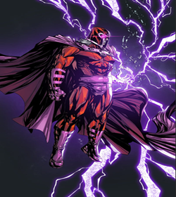
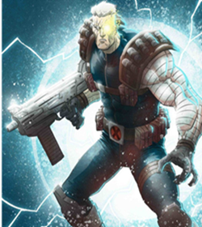

-
Cyclops
Description
Alpha level mutant.
-> Scott Summers.
-> His optic blasts have been compromised due to a Parachute' accident, which occurred when he was young.
-> His eyes are a portal to a whole dimension, full of kinetic energy.
-> His body absorb solar energy to crate those portals through his eyes.
-> Has developeded some tolerance to telepathic'powers, thanks to his mentor, his wife and intense trainning.
-> He's known to have great strategic'skills, that along with excellent leadership.
-> He is a Polyglot, has been recorded to have Spoke: Russian, mandarian, English and Spanish.
-> A great martial artist, which has mastered jiu-jitsu, judo, karate and kick-boxing.
-> He can use his optic blasts to create a propulsive force, which helps him to move faster during combat.
-> He can use his opctic blasts like a ricochet.
-> He can control how much power will be used on his blasts.
-> His optic blasts have the power to destroy small planets.
-> He's skilled enough to use his blasts to create a persons's fingerprints. -
Magneto
Description
Omega level mutant.
-> Has control over the whole electromagnetic spectrum.
-> Could use his powers to affect the earth electromagnetic'field.
-> He has resistence against telepathic'powers.
-> Can create a force field strong enough to endure Thor's, She-Hulk's and Galactus's attacks.
-> He can absorb eletric bolts of energy.
-> His control over magnetism, granted him, sorta of eletric powers.
-> His helmet is made of, a material that protect him against both telepathic and psychic abilities.
-> He has electromagnetic sight, which helps him see the entire electromagnetic spectrum and, also lets him see people's electromagnetic auras.
-> He can control any type of electromagnetic light, that is on the electromagnetic spectrum.
-> He can control inorganic metal.
-> His flight abilities are due to his control over the earth magnetic field.
-> He could use his abilities to create and manifest an electromagnetic projection.
-> He can control and use matter at a sub-atomic level, he has been known to control non-metalic substancies indirectly.
-> He can invert a person bloodflow, thanks to his control over magnetic fields.
-> His powers let him re-shape any type of metal. -
Cable
Description
Alpha/Omega level mutant.
-> Nathan Summers.
-> He was inffected with the techno(organic) virus.
-> He is a mutant from the future, the son of Scott Summers with Jean Grey's clone.
-> Has been recorded that he had controled the techno virus from time to time, in which one of those moments, he mannage to defeat the Silver'Surfer.
-> He has telepathic abilities, and he's known to be a powerful telekinisis skills.
-> He has been known to have the abilitie to comunicate through time, without his technology to travel through time.
-> He has chronokinesis abilities.
-> Has a high tolerance and resistence to both telepathic and psychic attacks.
-> He has developeded psionic shields, which he uses to protect his mind and other peoples.
-> He have the abilitie to cybernetic regenerate, which allows him to re-shape his cybernetics to a form or shape e desires.
-> He's cybernetic eye allows him to see the entire electromagnetic spectrum.
-> Has been observe to have an incredible capabilities of mental processing and problem solving.
-> His abilities of pysichometry, lets him known a person entire history and thoughs, through a object that this person has made contact with.
-> He can use astro projection abilities.
-> Has been known that he could bodily possessis a person, by taking over their minds.
-> Has acquired dimensional awareness, thanks to his time travels moments.
-> He can manipulate energy, due to his telekinisis abilities, which allow him to create mind fields, heal injuries and create barries that can outstand a nuclear blasts. -
Colossus
Description
Alpha level mutant.
-> He can transform his body into Organic Steel.
-> His organic steel form grantes him a bigger frame, a muscle size increase and a increase in his overall size.
-> He can endure outstanding amounts of damage and high temperatures.
-> His strenght gets incrised exponentially, when transformed in his organic steel form.
-> While he's on his organic steel state, it appers he does not need to breath.
-> He can re-shape his metalic form into liquid and solid metal form.
-> He do not need to eat while he stay on his metalic form.
-> His abilities to transform, appers to let him have an infinit amount of energy.
-> His joints apper to be a weakpoint.
-> In his metal form, he has a superhuman Stamina and high tolerance to fatigue.
-> His metal form appers to let him be in a self-sustaining state.
-> Vibranium appers to distabilized his transformation to organic steel. -
Rogue
Description
She can absorb other mutants powers and memories.
-> Has been known to had absorbed Captain Marvel's, Miss Marvel's and Thor's power.
-> Has been recorded that she had defeated Avalanche and Pyro at the same time.
-> She has been capable of absorbing many mutants and heroes power at the same time. -
Domino
Description
She's a "Lucky Girl".
-> A sorte dela: "it defies logic"-Shockwave. -
Sabertooth
Description
He has an extremely high regenerative powers and outstanding healing factor.
-> He's Wolverine older brother(or half-brother).
-> Larger and stronger than Wolverine.
-> It's stated that he is responsable for killing his parents.
-> He is constantly in his berserker rage.
-> His abilities allow him to see in complete darkness and smell from impossible distances.
-> He has superhuman strenght, senses, agility and resistence. -
Logan
Description
A.K.A. Wolverine.
-> Beta level mutant.
-> Project Weapon X.
-> Has an adamantium skeleton.
-> His mother had a case with an employee, which turn out to be his true father. His biological father killed his actual father, and that end up triggering his powers and his berserker rage.
-> Has an extremely high healing factor.
-> He has night vision and superhuman senses.
-> His healing abilities have allowed him to re-grown limbs and survive an atomic bomb.
-> He can detect lies.
-> He has an abilitie to indirectly comunicate with animals, thanks to his animal empathy.
-> He can speak: English, Corean, Japanese, Chinese, French, Spanish, Mandarim, Vietnamese, German, Thai and Dakota. -
Mystique
Description
She has Shape-Shifting abilities.
-> Highly skilled martial artist.
-> She has developed tolerance to telepathic abilities. -
Emma Frost

Description
Omega Level Mutant.
-> She has incredible telepathic abilities.
-> Has acquired a second mutation which allow her to transform to a Organic Diamond form.
-> Her Organic Diamond form makes every single cell of her body crystalizes, which makes her an sentian moble diamond form.
-> When she is on her Diamond form, she can tackle anything that are thrown at her.
-> Her Diamond form allows her to withstand, very high and low temperatures.
-> Her Diamond form grante a significant increase in her strenght and physical capabilities overall.
-> She can't use her psychic and telepathic abilities while she stays on her diamond form.
-> Her Diamond form increase exponentially her tolerance and resistence to both telepathic and psychic attacks.
-> She doesn't need to breath, when on her diamond form.
-> Has psychic cloaking abilities.
-> It appears that Sentinels can't detect her.
-> She has the abilitie to absorb knowledge.
-> Has been shown to be capable of doing body alteration abilities.
-> She can talk to animals.
-> Can do power nulification and re-form herself if been shattering.
-> Have the abilitie to treat someone's mind and healing traumas.
ekays.dsgn